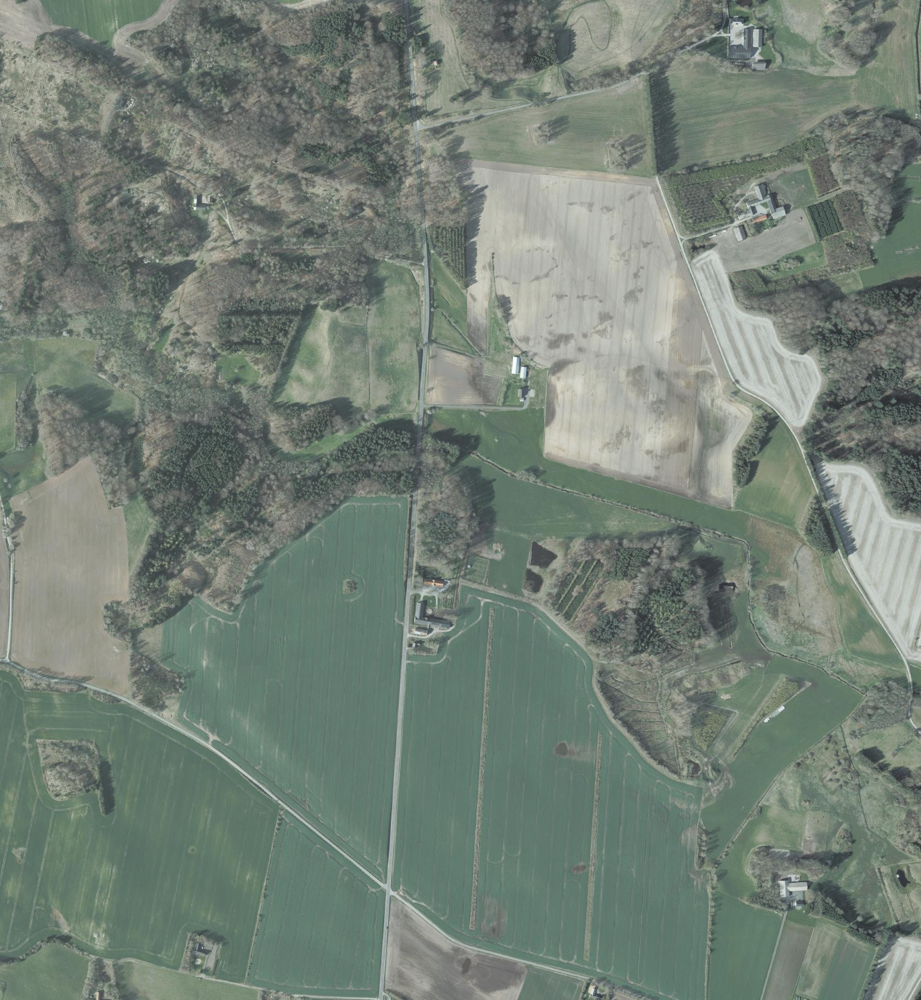
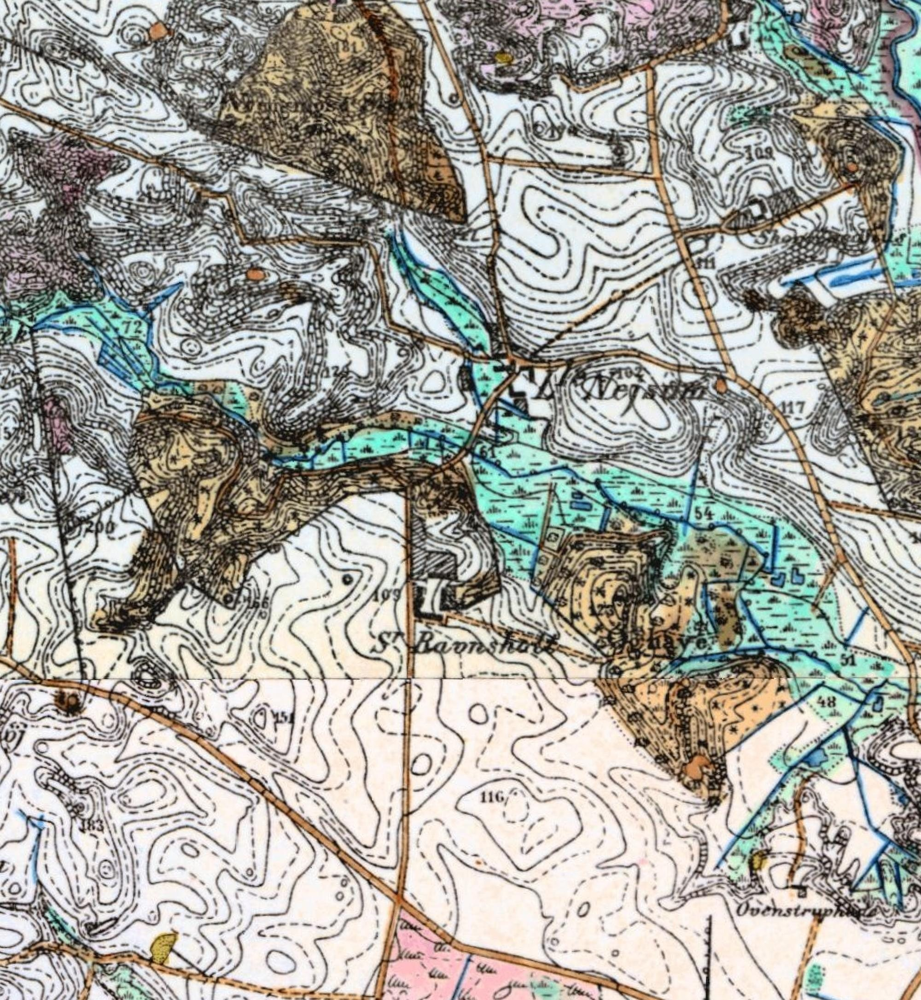
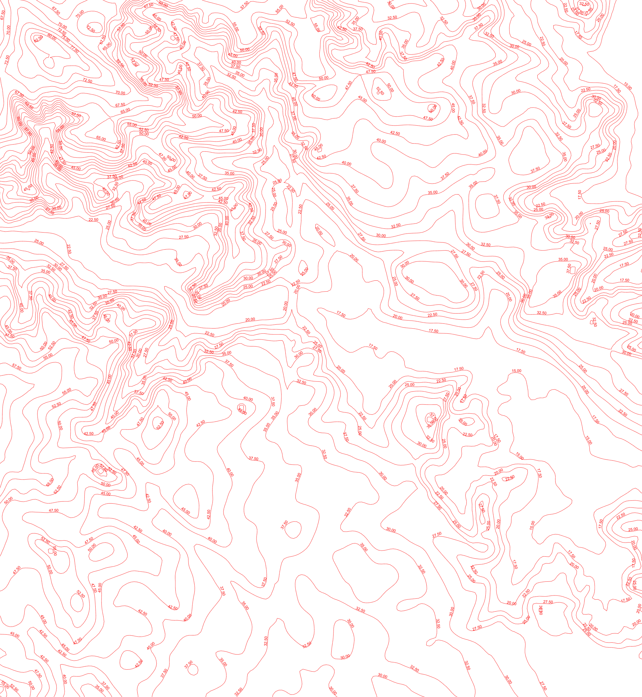

Simon Pedersen farmed Lille Nejsum for forty years, from before 1813 until his death in 1853. His son Thomas was born there in 1814 and took the farm over. The farmstead stands today where the surveyors drew it in 1813 and 1884. Next door lies Søndre Raunsholt. That is one of two farms that could be the "Raunsholt" where Simon grew up.
Found. The 1813 survey writes "Simon Pedersen" on the farm's land, and the 1884 map labels the farmstead "L. Nejsum". Today's farmhouse stands 11 m from the 1884 building.
Located, about 400 m south-west of Lille Nejsum, across the stream meadow. Whether this is the Raunsholt of the 1787 and 1801 censuses is still open.
The other Raunsholt in Skæve parish, about 1.9 km north-west. It is the other candidate for Peder Jørgensen's farm.
Six layers on one coordinate frame. The 1884 General Staff map and the modern layers come already georeferenced from the Danish map services. The 1813 survey has no grid, so it was fitted by turning and scaling it until its two farmsteads sat on the 1884 ones. Away from the farms it is approximate, but the stream, the meadow and the roads still fall close to their later lines.



Frame 57.2945–57.3115 N, 10.2325–10.2615 E, about 1.7 × 1.9 km. Drag the white handle to wipe between layers. Drag anywhere else to pan when zoomed. Sources: Generalstabens høje målebordsblade, surveyed 1884; Danmarks Højdemodel hillshade and contours; GeoDanmark spring orthophoto 2024 (Klimadatastyrelsen and Dataforsyningen). Original 1 sheet "Den mellemste Del, Skæve", surveyed 1813.
| Year | Source | What it gives |
|---|---|---|
| 1813 | Original 1 survey sheet, "Den mellemste Del, Skæve", made for the new land register | The title lists "Lille Neisum, Sønd. Raunsholt". On the field north of the farmstead the surveyor wrote , the two holders of the farm. The farm buildings are drawn in red at a road junction on the north edge of the stream meadow. |
| 1814 | Skæve parish register, baptisms | Thomas, son of "Gaardmand Simon Pedersen og hustru Ane Thomasdatter i Lille Neisum", born 16 December, baptised at home the next day. |
| 1834–1850 | Censuses of 1834, 1840, 1845, 1850 | Simon Pedersen at Lille Nejsum, first as farmer and from 1845 as the retired father of the farmer, Thomas Simonsen. |
| 1853 | Skæve parish register, burials | Simon Pedersen dies 25 July, aged 76. |
| 1884 | General Staff 1:20,000 map | A farmstead labelled "L. Nejsum" at the same junction on the north edge of the meadow. , the buildings are 11 m apart. |
| 2024 | Orthophoto and Danish place-name register | The farm at the junction is still called Lille Nejsum. Its house stands at 57.30484 N, 10.24899 E. |
The place-name register's label point for "Lille Nejsum" sits on the road about 140 m west of the buildings. The position above is the farmhouse itself, read from the 2024 orthophoto and checked against the 1884 building symbol.
The 1787 and 1801 censuses place Peder Jørgensen and Inger Christensdatter at "Raunsholt" in Skæve parish, with their son Christen and, in 1787, their youngest son Simon. Skæve had two farms of that name. The draws as a lone house symbol at the edge of the sheet, and surveys in full, next to Lille Nejsum. The labels the northern farm "Nre Ravnsholt" and the southern one with an abbreviated "S".
Choose any image to open it full screen. Pinch, scroll or double-click to zoom.
Mette Pedersdatter's grandfather was co-tenant of farm no. 2 in Sterup in 1688. Fredenborg could be pinned because the 1844 land register carried each farm's 1688 tax value forward, which tied the old farm to a new number and a mapped plot. In Sterup that link is broken. No farm in the 1844 register carries farm no. 2's 1688 value, and several farms show the same round figure. The village's tax values were almost certainly redistributed when its fields were enclosed around 1800. The 1799 survey of Sterup shows the village and its fields, but not which plot came from farm no. 2. A tenant list or probate naming the farm's later holders could still make the connection.